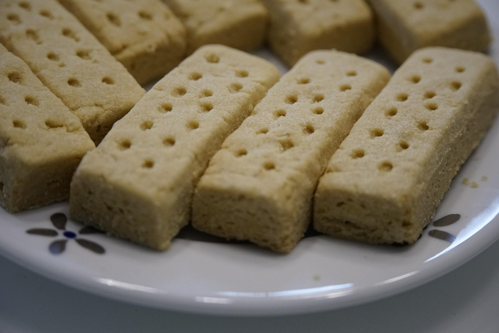

Classic Shortbread Cookies
Home

Jump to Recipe
Description
A classic that never gets old. These buttery golden shortbread
are so simple to make, delicious, and perfect for any occasion.
Mix it up by pressing the dough into a skillet to bake, or pressing
it into a tart pan. You can also do easy variations by adding some
extra ingredients such as rose water, almonds, or even olives!
Ingredients
- 1 lb. cold unsalted butter, sliced
- 1/2 cup or 100g sugar
- 1/2 cup or 65g powdered sugar
- 1 1/4 tsp fine grain sea salt
- 4 cups or 500g unbleached all-purpose flour
Steps
Makes 2-3 dozen meidum sized cookies.
- In the bowl of a stand mixer with a paddle attachment, cream the butter until soft.
Add the sugars and salt, and continue to mix until the texture is billowy and fluffy.
Scrape down the bowl once or twice along the way.
- Add the flour in two additions, mixing on low until just combined.
Turn out onto the countertop, form a uniform ball and press into a thick disc shape.
Wrap in plastic and refrigerate until completely chilled - at least a couple of hours.
You can also freeze the dough at this point for later use.
- Heat the oven to 350F with a rack in the center.
Roll the dough out 3/4-inch thick and use a cookie cutter or knife to create as many cookies as possible.
Gather any scraps, form a ball, re-roll and cut out remaining cookies. If you're making larger cookies,
use a fork or skewer to poke dots across the tops of the cookies. Arrange an inch apart on parchment-lined baking sheet.
Return the cookies to refrigerator, on the pan, for another 15-30 minutes. This will help reduce spread.
- Bake for 20 minutes, rotate the pan, and bake for another 10-15 minutes or until the cookies are deeply golden
where they touch the pan, and lightly golden on top. They should smell toast and amazing!
- Remove from the oven, allow to cool for 5 minutes, and transfer to a wire rack.
Back to Top